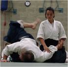
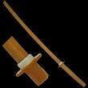

Aikido
 De: La Frikipedia, la enciclopedia extremadamente seria.
De: La Frikipedia, la enciclopedia extremadamente seria.
| De la serie artes marciales:
|
| Aikido
|
|
|
| Creador
|
Morohei Huesitos
|
| Época
|
Maricastaña
|
| Estilo
|
Japonés light
|
| Armas
|
Bokken (Espadón jamonero), Bo (Rama de árbol) y Tanto (Navaja Albaceteña)
|
| Cinturones
|
De Blanco Lejía a Negro Tizón
|
| Practicantes
|
Poquitos
|
| Escuelas
|
De educación Aikidaria
|
| Maestros
|
Steven Seagal
|
| Notas
|
Peligro de desnucamiento
|
«El Aikido es un arte marcial milenaria, suave y delicada, no pretende expandir el ego ni herir a nadie. Pero si vienen con mala idea, ¡A hostia limpia!»
~ Morihei Ueshiba sobre el Aikido
«¡De esta no salgoooooo!»
~ Anónimo tras salir despedido de una proyección hecha por Steven Seagal
Arte marcial japones de origen milenario creada hace más o menos un ciento, centenar o un siglo de años. Fué creada por Morohei Huesitos para defenderse de los matones de la residencia, que siempre le pegaban para quitarle el almuerzo. Entonces un día Morohei, también llamado O sensei, decidió inventar un arte marcial (Que no viene de marciano, sino de Marcial) para que los vejetes rebeldes de la residencia no se volvieran a meter con él. Desde antaños de años es practicada por miles de personas alguna gente, y es una lástima que ya se haya muerto su creador, porque cocinaba los Huesito de chocolate como nadie. Todavía hoy (u mañana) sus discípulos nos deleitan con miles de multiformes llaves e inmovilizaciones y cuchillás con navajas que nos dejan con la boca abierta.
Historia y Biografía de O sensei
Nació el día 31 de febrero, en un invierno caliente de 1890. Cincuenta años después fué bautizado como Morohei Huesitos de Klon por su padre Chok-Olatina Huesitos y su madre Rohb-Otika Klon. Tuvo una infancia muy dura, llena de traumas porque sus padres no le compraron una barbie ni una Nancy. Ante esas grandes frustraciones ya iba mostrando una cierta atracción por las artes marciales. Sus padres se apiadaron de él y lo apuntaron con Chuck Norris a dar clases de Chepu-Do, milenaria arte marcial Asiática. Una vez supo ese arte marcial, se apuntó a un gimnasio para que le impartiera clases Bruce Lee en su gran arte marcial Jet-Kune Do, cosa que compaginaba con su trabajo ilegal y sin contrato de cosedor de balones Nike. Ya de mayor, en la residencia no soportó el acoso de esos matones y creó el Aikido, milenaria arte marcial de defensa personal.
ma==Maestros de Aikido==
- Morohei Huesitos: Inventor y creador del Aikido, conocido mundialmente por ser el el mejor maestro de Aikido y por inventar la marca de chocolatinas Huesitos. En la residencia en la que vivía de
viejuno mayor lo maltrataban, y por eso el día del maltrato en Japón se llama "Día Morohei Huesitos".
- Ta-Mudo: No confundir con Tamudo, jugador del Español o con 'Ta mudo, frase que se dice cuando alguien está mudo. Alumno directo de Morohei Huesitos, todavía sigue vivo, a pesar de las cuatroquinientas úlceras de frente que padece desde los tres años.
- Cristiano Tissier: Maestro de Aikido franchute (Con todo mi respeto a Asterisco y Obelisco) que, como su nombre indica es muy cristiano. No hay día que no vaya a la iglesia, y hasta en las clases de Aikido reza un padrenuestro, un avemaría y dos rosarios antes de empezar. Siempre tiene un Cristo en el Tatami y lleva la inscripción INRI (Intuición Negra de Robos Impresos) tatuada en la espalda, como señal de lo buen cristiano aposcatólico extremista que es.
- Steven Seagal: A la traducción, "Sergio Gallo de Mar", es un maestro de Aikido de los Ostiadores de toda la vida, con los que rezar sirve de poco aún bajo el amparo del FSM, porque con hacerte una llave de Aikido te destroza los ¿1006? músculos y ¿470? huesos del cuerpo sin despeinarse. Se hizo famoso por sus películas, y por dar la estadística de que el 100 % de las personas humanas y animales que se encontraban con el, se hacían caquita en los pañales.
- Fran Rivera: Que sí que sí, que aunque os sorprenda este también es un gran maestro, gracias al Aikido ha conseguido protagonizar un anuncio de un coche (un Jeep nada más y nada menos).
- materazzi Aikidoka Italiano, cruce de un GlobeTroter y un Jurgolista, y que puede más que los anteriores, todos juntos.
Las cuatro C's del Aikido
Las cuatro verdaderas C's del Aikido
Técnicas de Aikido
Las técnicas del Aikido se dividen en Inmovilizaciones y Proyecciones, que varían dependiendo de la parte del cuerpo que te vayan a arrancar, golpear, coger o amputar. Las más importantes son las siguientes:
Inmovilizaciones
- Ikkyo: 1er principio del Aikido, consistente en la inmovilización del oponente mediante la presión en el codo. Cuando te van a dar la del pulpo, tu le cruzas la cara de un sopapo, le endiñas en el codo y con la otra mano sujetas la muñeca y aprietas el brazo del atacante contra el suelo.
 Chuck Norris disfrazado de mujer para que lo dejaran competir (no se aceptaban profesionales)
- Nikkyo: 2º principio activo del suldofosfato del Aikido, consistente en la inmovilización del oponente mediante la toma de el codo y la muñeca. Según viene hacia ti el maromo, la das una cate en toda la boca (Esto suele ir acompañado de un grito estilo ¡Gñahaya!), la agarras de la mano y de la muñeca y le estrujas la mano como si quisieras sacar sangría de ella.
- Sankyo: 3er final, en el que le dejas el brazo inmovilizao pa' toda su vida, eso si no se lo amputas de un tirón. En esta técnica le agarras bien de la mano, empiezas a dar vueltas al hombre en cuestión, y cuando esté a punto de vomitar, le tiras al suelo.
- Yonkyo: 4º principio del Aikido, consistente an agarrar a tu oponente por la muñeca y apretar y apretar más aún, hasta que se le corte la circulación y le explote la cabeza.
- Gokkyo: 5º principio del Aikido, sólo para usuarios con navaja. Cuando te van a abrir las tripas en canal, le das una hostia con el canto de la mano en la muñeca dejándole medio tonto. Luego le agarrras, le tiras al suelo, y cuando te arrodillas haces palanca con su mano en tu rodilla hasta partirle el brazo e imposibilitar que se haga más pajas en toda su vida.
Proyecciones
Lo imprescindible para las proyecciones, como su propio nombre indica es un proyector, valen tanto los de cine como los de diapositivas, eso va a elección del practicante.
- Iriminage: Inmovilización al más puro estilo Smackdown; tu le das un volteo y luego mientras das una "zancá" va cruzas el cuello con el brazo (Lo de dar un voltio al atacante va a elección del Tori (No confundir con toro) que haga la técnica).
- Shihonage: En este cuando te han cazao bien y te van a endiñar de lo lindo, tu te volteas alrededor de él chaval y le dejas el brazo por un lado, la mano por otra y ya verás, que hasta llora.
- Kotegaeshi: Es un híbrido entre romper muñecas, lanzar bichos por los aires y partir brazos. Cuando tu muñeca es agarrada, pibotas con un tenkan (Desplazamiento pa' trás) y doblas la muñeca del adversario. Si éste no quiere morir, se deberá arrojar al cemento del suelo y abrirse el coco, si no le extirparás la muñeca de tanto girar (Intento ser lo menos Gore posible, perdón por lo explícito de la técnica).
- Koshinage: Agarras a tu contrincante de la manita (Oissssssss!) y te das un voltio de modo que vuestra posición sea como si os estuvierais dando por culo. Entonces es cuando procedes a tirarte un pedo, derribando y proyectando tu oponente hasta todo límite terrestre y físico (es decir, hasta que se ostie con la pared).
Las armas en Aikido
 Una rama de árbol pulida, para dar lugar a una Bokken
El Aikido es un arte marcial que se basa en el trabajo de defenderse de enemigos con sable, ya estés armado o desarmado (En el caso de Morohei se defendía de enemigos con bastón). Aparte del sable existen otrasarmas tradicionales Japonesas, como el Tanto o el Jo.
- Bokken: Sable o Katana que utilizaban los antiguos Samuráis japoneses para sajar, cortar, cercenar, seccionar, amputar, desmembrar, rajar, romper y destrozar miembros de los enemigos en la batalla. En la antiguedad los Bokkens eran de Acero puro Inoxidable, sin embrago ahora, por culpa del Cambio climático, son de madera, o bien de hojalata.
- Tanto (o Cuanto): Navaja Albaceteña que empuñaban los Aikidokas para Incrustar, clavar o penetrar con ellas en los Huevos, cabeza o esternón del enemigo a abatir. Normalmente se atacaba por la espalda, con lo que muchos Chinos acababan con el Tanto clavado en la Nuca
- Jo (que no es lo mismo que Yo que ni que tú): Palo o rama que usaban los Japanese para ostiar, empalar o escalabrar a sus más mejores oponentes. Pesa entre 0 y -1 grados fahrenheit.Mas conocido como palo de escoba
Autor(es):
- Frikiman
- Roms
- Wwtawriter112
- Frikih
- Lemans
- Relegados United
- Dark esnob
- RaperoZ15
- Geiser
- Likan003
Frikipedia 2005-2016, Licencia
GFDL 1.2 - Extraído por FrikiLeaks